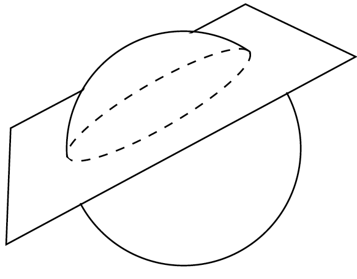
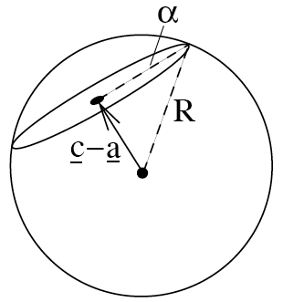

Week 9: Spheres
\[ \newenvironment{amatrix}[1]{% \left[\begin{array}{#1} }{% \end{array}\right] } \]
A final object which is particularly easy to describe in three dimensions is a sphere. Unlike lines and planes, these are not linear: you cannot add a vector to a point on a sphere to get another point on the sphere.
Instead, we define a sphere in terms of its centre, with a position vector \({\mathbf{a}}\) say, and a radius \(R>0\). Then the sphere is the set of all points whose distance from the centre is equal to the radius, that is \[ |{\mathbf{r}}-{\mathbf{a}}| = R. \] It’s normal to square this, because the magnitude \(|\cdot|\) adds an ugly square root otherwise, giving \[ |{\mathbf{r}}-{\mathbf{a}}|^2 = R^2 \] or expanding this out \[ (x-a_1)^2 + (y-a_2)^2 + (z-a_3)^2 = R^2. \]
Think: what’s the equation for a sphere of radius 2 centred on the origin?
Now \({\mathbf{a}}={\mathbf{0}}\) in the above equations, so they simplify to \[ |{\mathbf{r}}|^2 = 4 \] or \[ x^2+y^2+z^2 = 4. \]
Think: what is the centre and radius of the sphere given by \[ (x-2)^2 + y^2 + (z+1)^2 = 9? \]
\({\mathbf{a}}=[2,0,-1]\) and \(R=3\).
Example
Find the centre and radius of the sphere described by the equation \[ x^2 + y^2 + z^2 - 6x -4y + 2z - 4 = 0. \]
This isn’t currently in the general form we saw above, so we need to manipulate this equation until it looks like we want. In particular, we need to use completeing the square: \[ \begin{aligned} 0&=x^2 + y^2 + z^2 - 6x -4y + 2z - 4 \\ &= \left(x-\frac{6}{2}\right)^2 - \frac{6^2}{2^2} + \left(y-\frac{4}{2}\right)^2 - \frac{4^2}{2^2} + \left(z+\frac{2}{2}\right)^2 - \frac{2^2}{2^2} - 4\\ &= (x-3)^2 + (y-2)^2 + (z+1)^2 - 9 - 4 - 1 - 4 \end{aligned} \] so \[ (x-3)^2 + (y-2)^2 + (z+1)^2 = 16 = 4^2. \] Finally this gives a centre of \((3,2,-1)\) and a radius of \(4\).
The distance between a sphere and a point, line or plane.
This sounds hard but it’s actually very easy:
- Find the distance from the point/line/plane and the centre of the sphere (a point)
- Substract the sphere’s radius from this distance
Think: what’s the distance between the sphere of radius 5 centred at \((4,1,8)\) and the origin?
The distance between the centre of the sphere and the origin is \(\sqrt{4^2+1^2+8^2}=\sqrt{81}=9\), so the distance of the sphere from the origin is \(9-5=4\).
The intersection of a line and a sphere
Following similar things in the previous weeks, to find intersections we just take the two equations and solve them together.
The crucial thing is to think (geometrically) about how many solutions to expect. A line can intersect a sphere at two points, or it can not intersect, or the line can just touch the sphere at one point.
A general line is (going through \({\mathbf{a}}\) with direction \({\mathbf{s}}\)) \[ {\mathbf{r}} = {\mathbf{a}} + \lambda{\mathbf{s}} \] and a general sphere is (radius \(R\), centre \({\mathbf{c}}\)) \[ |{\mathbf{r}}-{\mathbf{c}}|^2 = R^2. \]
Substituting the first into the second gives \[ |{\mathbf{a}} + \lambda{\mathbf{s}}-{\mathbf{c}}|^2 = R^2, \] which is just a quadratic equation for \(\lambda\) which we can solve. Quadratic equations have 0, 1 or 2 (real) solutions, so this makes sense.
The number of solutions of the quadratic tells us the number of intersection points.
Then we can use the value(s) of \(\lambda\) to find the points from the line equation.
Example
Find the intersection points of the line \[ {\mathbf{r}} = [1,0,0] + \lambda[0,1,0] \] with the sphere \[ x^2+y^2+(z-1)^2 = 4. \]
The components of the line equation are \[ \begin{aligned} x&=1,\\ y&=\lambda,\\ z&=0. \end{aligned} \] Substituting these into the sphere equation gives \[ 1 + \lambda^2 + (-1)^2 = 4 \] so \(\lambda^2 = 2\).
This means our two parameter values are \(\lambda=\pm\sqrt{2}\), and so the points are \((1,\sqrt{2},0)\) and \((1,-\sqrt{2},0)\).
(Now check these points satisfy both our line and sphere equations.)
The intersection of a plane and a sphere
This one’s a bit different. Now there are either no intersection points, exactly one point (if the plane just touches the sphere), or the plane and the sphere intersect on a circle.

Suppose we have a sphere \(|{\mathbf{r}}-{\mathbf{a}}|^2=R^2\) and a plane \({\mathbf{r}}\cdot{\mathbf{n}} = d\).
What we want to find is the radius \(\alpha\) of the circle, and its centre \({\mathbf{c}}\): 
We do this as follows: 1. Find the nearest point on the plane to the centre of the sphere \({\mathbf{a}}\). This is \({\mathbf{c}}\), the centre of the circle. 2. Find the distance between \({\mathbf{a}}\) and \({\mathbf{c}}\). 3. By Pythogoras’s theorem, since this is a right-angled triangle, \(\alpha^2+|{\mathbf{c}}-{\mathbf{a}}|^2 = R^2\), so we can find \(\alpha\).
The first two steps are exactly the same as finding the distance between a plane and a point – see last week’s notes.
The intersection of two spheres
This case is hard to visualise, but hopefully you can imagine that two spheres intersect on a circle, just as in the case of a sphere with a plane. In fact, the easiest way to do this is to first find the plane the circle lives on, and then do exactly the same method as before.
Say we have spheres \[ |{\mathbf{r}}-{\mathbf{a}}_1|^2 = R_1^2\] and \[ |{\mathbf{r}}-{\mathbf{a}}_2|^2 = R_2^2.\]
Remembering that \(|{\mathbf{r}}|^2 = {\mathbf{r}}\cdot{\mathbf{r}}\), we can expand these out as \[ {\mathbf{r}}\cdot{\mathbf{r}}-2{\mathbf{r}}\cdot{\mathbf{a}}_1 + {\mathbf{a}}_1\cdot{\mathbf{a}}_1 = R_1^2\] and \[ {\mathbf{r}}\cdot{\mathbf{r}}-2{\mathbf{r}}\cdot{\mathbf{a}}_2 + {\mathbf{a}}_2\cdot{\mathbf{a}}_2 = R_2^2\] and then subtract these equations to get rid of the \({\mathbf{r}}\cdot{\mathbf{r}}\) terms: \[ -2{\mathbf{r}}\cdot{\mathbf{a}}_1 + {\mathbf{a}}_1\cdot{\mathbf{a}}_1+2{\mathbf{r}}\cdot{\mathbf{a}}_2 - {\mathbf{a}}_2\cdot{\mathbf{a}}_2 = R_1^2 - R_2^2.\] This simplifies to \[ {\mathbf{r}}\cdot\left(2{\mathbf{a}}_2-2{\mathbf{a}}_1 \right) = R_1^2-R_2^2 + {\mathbf{a}}_2\cdot{\mathbf{a}}_2 - {\mathbf{a}}_1\cdot{\mathbf{a}}_1 \] which is exactly in the form \({\mathbf{r}}\cdot{\mathbf{n}} = d\), so this is the equation of the plane!
Let’s put all of this together in a final example:
Example
Find the radius and centre of the circle of intersection of the spheres \[ (x-1)^2 + y^2 + (z+1)^2 = 4 \] and \[ (x+3)^2 + y^2 + z^2 = 5. \]
First we expand out the equations: \[ x^2 + y^2 + z^2 -2x + 2z - 2 = 0 \] and \[ x^2+y^2+z^2 +6x + 4 = 0. \] Subtracting these (cancelling out the quadratic terms): \[ -8x +2z - 6 = 0 \] which simplifies to \[ 4x - z = -3. \]
So the plane of intersection is \(4x - z = -3\), with normal \([4,0,-1]\).
Next, we need to find the centre of the circle of intersection. This is the point \((c_1,c_2,c_3)\) which is in a direction \([4,0,-1]\) from the centre of the first sphere \((1,0,-1)\).
So \[ [c_1,c_2,c_3] = [1,0,-1] + \lambda[4,0,-1] \] for some \(\lambda\).
Plugging these into the plane equation \(4x-z=-3\) gives \[ 4(1+4\lambda) - (-1-\lambda)=-3 \] so \(\lambda = -8/17\), which means the centre of the circle is is \({\mathbf{c}} = [-15/17, 0, -9/17]\).
The distance of the centre of the circle from the centre of the first sphere is \[ |{\mathbf{c}}-[1,0,-1]| = \sqrt{(-32/17)^2+0^2+(8/17)^2} = \sqrt{1088}/17\]
Then finally using Pythagoras we know that the radius of the circle \(\alpha\) satisfies \[ \alpha^2 + (\sqrt{1088}/17)^2 = 2^2\] because the radius of the first sphere is 2, so \(\alpha = \sqrt{4- 1088/289} = 2/\sqrt{17}\).